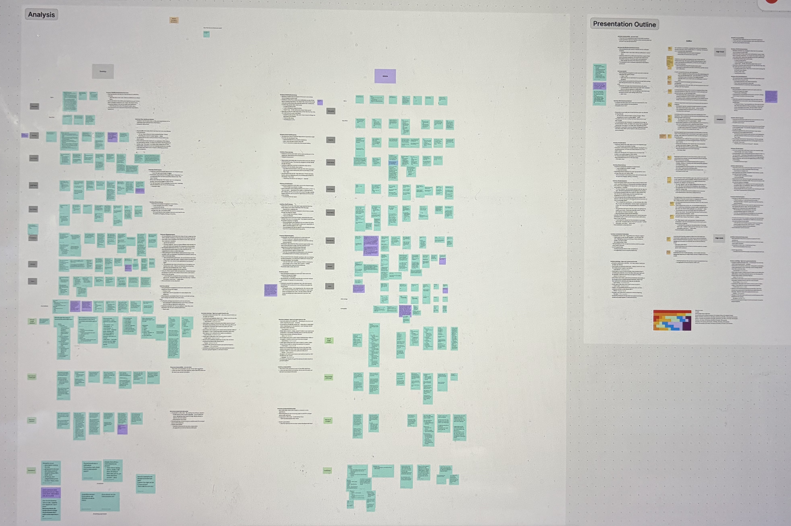
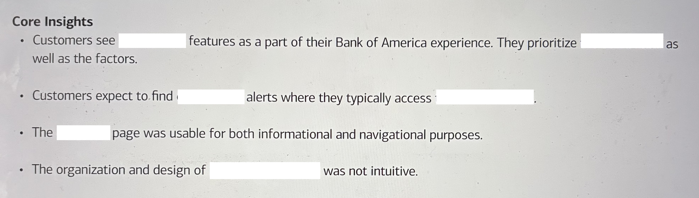

New Vendor Experience
Research to bring a new partner experience to our platforms.
Context
The company was considering taking on a new vendor to provide a white-labeled experience with a variety of features.
Research would help the two companies make decisions on their partnership. Our stakeholders needed to know: Do customers understand the vendor experience as a 'Company' experience?
Results would provide insights on where my company should push for design customization.
Research Goal
Uncover how our customers interact with a proposed new experience in order to inform a vendor partnership.
Constraints
- The company had to collaborate with the vendor, so templates were closed off to most design changes.
- My company’s platforms had significant technical implementation limitations.
Approach
- The complexity of the requirements led me to recommend and conduct in-depth interviews.
- I partnered with a designer to build a medium fidelity prototype to capture the possible integration between our platforms and the new feature.

Analysis workspace: Grouping findings to drafting a presentation outlineKey Findings
Strong integration led to brand ownership
Customers identified the experience as "belonging" to our company, thanks to the design integration and branding. Thus, participants expected to locate a certain vendor feature (Feature A) where they typically use a similar bank feature. This created a potential usability gap.
Layout issues made Feature B difficult to use
The vendor's design choices for Feature B created friction that would impact customer adoption and satisfaction.
Outcomes
The usability success of my testing made the company partnership possible. Phase 1 launches in January 2026, with several key changes informed by research findings.
Vendor accommodated design changes for Feature B
My findings led to productive discussions with the vendor, who was able to implement design improvements addressing the documented limitations in Feature B.
Provided executive risk assessment for Feature A constraints
Due to technical constraints, my company was not able to implement an entry point for Feature A that would meet customer expectations. I brought these results to executives to highlight the potential dangers of flawed integration, working with the team and other researchers to provide an accurate risk assessment.
This balanced our recommendation against the real possibility that consumers could acclimate to a new entry point. From there, leadership could make an informed decision about launch timing and mitigation strategies. I can't provide the risk assessment, but below you can see how all of the project analysis work boiled down into a few core insights.

Summarized results for executive presentationReflection
This study reminded me of an important lesson: sometimes you have to compromise on an idealized user experience to get a product to release.